ที่มาของศาสนา
ศาสนาพราหมณ์-ฮินดู เกิดขึ้นในอินเดียโบราณ มีอายุยาวนานกว่าศาสนาอื่น ๆ ในโลก เป็นศาสนาพหุเทวนิยม มีเทพเจ้าหลากหลายองค์พระตรีมูรติ (พระพรหม พระวิษณุ พระศิวะ)
ที่สำคัญที่สุดคือ ไม่มีศาสดาผู้ก่อตั้ง แต่มีฤๅษีและพราหมณ์เป็นผู้สั่งสอนและพัฒนาหลักคำสอนสืบต่อกันมา
ความเป็นมา
กำเนิดในอินเดียศาสนาพราหมณ์-ฮินดู เริ่มต้นในแถบลุ่มแม่น้ำสินธุ ซึ่งเป็นที่ตั้งของอินเดียปัจจุบัน
ศาสดาของศาสนา
ไม่ปรากฏศาสดาของศาสนาแต่ได้นับถือเทพเจ้าหลายพระองค์และมาพราหมณ์ ฤาษีเป็นสั่งสอนในศาสนา
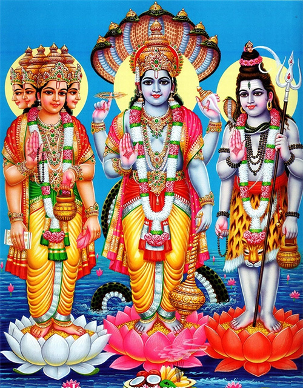
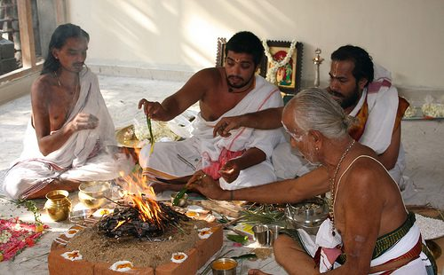
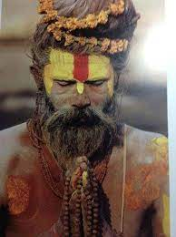
สิ่งเคารพสูงสุดของศาสนา
คือ พระพรหม พระวิษณุ และพระศิวะ ซึ่งรวมกันเรียกว่า ตรีมูรติ หรือ "สามมหาเทพ" เป็นเทพเจ้าสูงสุด
พระพรหม (Brahma):
เป็นเทพเจ้าผู้สร้างโลกและสรรพสิ่ง
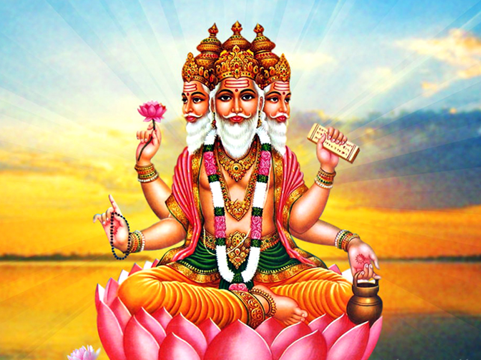
พระวิษณุ (Vishnu) หรือพระนารายณ์:
เป็นเทพเจ้าผู้รักษาและปกป้องโลก
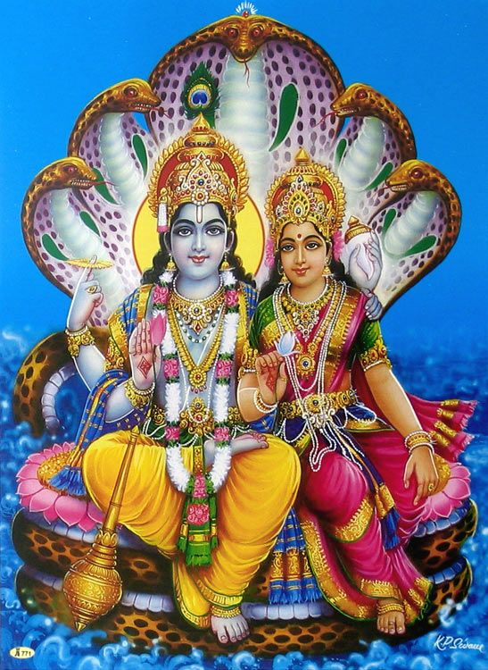
พระศิวะ (Shiva) หรือพระอิศวร:
เป็นเทพเจ้าผู้ทำลายสิ่งที่ไม่ดีและเป็นผู้สร้างใหม่
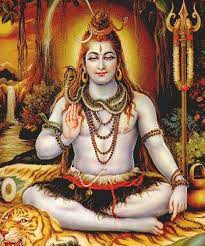
องค์ประกอบของศาสนา
1.หลักคำสอน (หลักปุรุษารถะ)
จุดมุ่งหมายของชีวิต ได้แก่
-ธรรมะ (หน้าที่/จริยธรรม)
-อรรถะ (การเจริญเติบโต/หน้าที่การงาน)
-กามะ (ประสงค์/แรงจูงใจ)
-โมกษะ (การหลุดพ้น/การเป็นอิสระจากการเวียนว่ายตายเกิด)
2.คัมภีร์ (พระเวท)
คัมภีร์ศักดิ์สิทธิ์ที่สำคัญที่สุดของศาสนาพราหมณ์-ฮินดู
3.พิธีกรรม
พิธีประจำบ้าน หรือพิธีสังสการ เป็นพิธีกรรมที่ทำให้บริสุทธิ์ซึ่งผู้ที่อยู่ในวรรณะพราหมณ์ กษัตริย์ แพศย์
4.หลักปฏิบัติ
วานปรัสถาศรม (การเกษียณจากหน้าที่ภาระและแสวงหาความรู้ทางจิวิญญาณ)
5.หลักอรรถะ
กามะ (ความปรารถนา, ความสุขทางโลก)
6.หลักวรรณะสี่
ระบบแบ่งชั้นวรรณะในสังคมฮินดู
7.เทพเจ้าสูงสุด
เทพเจ้าสูงสุดของศาสนาพราหมณ์-ฮินดู ได้แก่
พระพรหม (ผู้สร้าง)
พระวิษณุ/พระนารายณ์ (ผู้ปกป้องรักษา)
พระอิศวร/พระศิวะ (ผู้ทำลาย)
หลักคำสอนสำคัญ
หลักคำสอนสำคัญของศาสนาพราหมณ์-ฮินดูประกอบด้วยหลักธรรม 4 ประการ ได้แก่
-ธรรมะ (Dharma):
การทำหน้าที่ตามหลักศีลธรรมและจริยธรรม, รวมถึงการปฏิบัติตามหน้าที่ในวรรณะของตน
-อรรถะ (Artha):
การแสวงหาความมั่งคั่งและทรัพย์สิน, การประกอบอาชีพที่สุจริต
-กามะ (Kama):
ความปรารถนา, ความสุขทางโลก, การสนองความต้องการทางร่างกายและอารมณ์
-โมกษะ (Moksha):
การหลุดพ้นจากการเวียนว่ายตายเกิด, การหลุดพ้นจากความทุกข์, การรวมเป็นหนึ่งเดียวกับปรมาตมัน (จิตสูงสุด)
แนวคิดอื่นๆ ที่สำคัญ:
-กรรม (Karma):
การกระทำและผลของการกระทำ, เชื่อมโยงกับการเกิดใหม่และการเวียนว่ายตายเกิด
-การเวียนว่ายตายเกิด (Samsara):
วงจรการเกิด, ตาย, และเกิดใหม่ ซึ่งเป็นสิ่งที่ผู้ศรัทธาต้องการหลุดพ้น
-อาศรม 4 (Ashramas):
การแบ่งชีวิตเป็น 4 ช่วง คือ พรหมจารี (นักศึกษา), คฤหัสถ์ (ครองเรือน), วานปรัสถ์ (ออกบวช), และสันยาสี (ผู้สละทางโลก)
-ปรมาตมัน (Paramatman):
จิตสูงสุด, สภาวะความเป็นหนึ่งเดียวกับพระเจ้า, เป็นเป้าหมายสูงสุดของศาสนา
-พรหม (Brahman):
สภาวะแห่งความเป็นจริงสูงสุด, ไม่สามารถระบุได้, เป็นสิ่งสูงสุดที่ทุกสรรพสิ่งรวมอยู่
วันสำคัญทางศาสนา
วันสำคัญทางศาสนาพราหมณ์-ฮินดูมีหลายเทศกาลและวันสำคัญที่เฉลิมฉลองกันอย่างแพร่หลาย ทั้งในประเทศอินเดียและทั่วโลก โดยแต่ละเทศกาลก็มีความเชื่อและประเพณีที่แตกต่างกันไป วันสำคัญบางวันมีการเฉลิมฉลองการประสูติของเทพเจ้า หรือการบรรลุธรรมของบุคคลสำคัญทางศาสนา ในขณะที่บางวันก็เป็นวันแห่งการบูชาพระแม่ลักษมี หรือวันแห่งการเฉลิมฉลองแสงสว่าง
ตัวอย่างวันสำคัญทางศาสนาพราหมณ์-ฮินดู:
-ทีปาวลี (Diwali):หรือเทศกาลแห่งแสงสว่าง เป็นเทศกาลที่สำคัญที่สุดวันหนึ่งของศาสนาฮินดู
-คเณศจตุรถี (Ganesh Chaturthi):เทศกาลบูชาพระพิฆเนศ
-พระรามนวมิ (Ram Navami):วันประสูติของพระราม
-วันศิวะราตรี (Maha Shivaratri):วันบูชาพระศิวะ
-วันวาราลักษมี วรัทตัม (Varalakshmi Vratam):วันขอพรพระแม่ลักษมี
-ลักษมีชยันตี (Lakshmi Jayanti):วันคล้ายวันประสูติของพระแม่ลักษมี
สัญลักษณ์ของศาสนา
สัญลักษณ์ที่สำคัญที่สุดของศาสนาพราหมณ์-ฮินดู คือ "โอม" (ॐ) ซึ่งเป็นอักษรเทวนาครี โอมมีความหมายถึงพระเจ้าสูงสุดทั้ง 3 องค์ หรือตรีมูรติ ได้แก่ พระพรหม พระวิษณุ และพระศิวะ
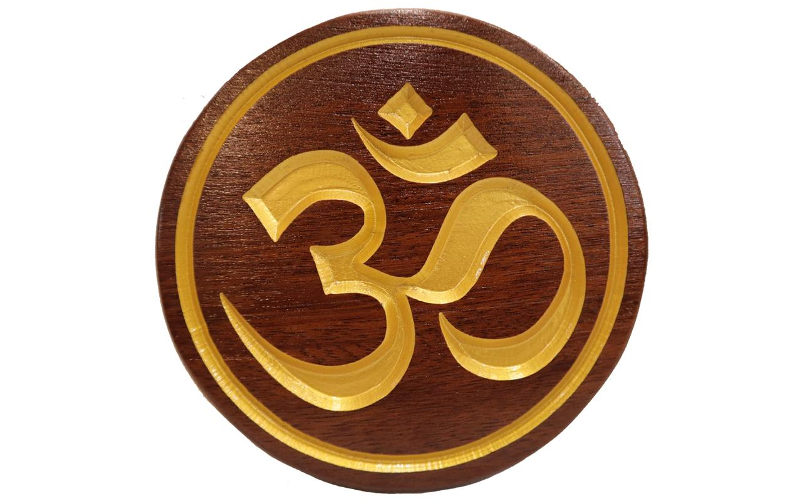
รายละเอียดสัญลักษณ์: โอม (ॐ):
เป็นสัญลักษณ์แทนเสียงศักดิ์สิทธิ์ที่เป็นจุดเริ่มต้นของการสร้างสรรค์จักรวาล และเป็นตัวแทนของเทพเจ้าสูงสุดทั้ง 3 องค์
อะ: (อะ) แทน พระศิวะ
อุ: (อุ) แทน พระวิษณุ
มะ: (มะ) แทน พระพรหม
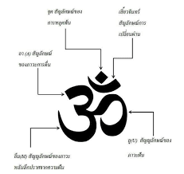
รูปเคารพของศาสนา
รูปเคารพของศาสนาคือรูปปั้นหรือรูปแกะสลักองค์เทพต่างๆ
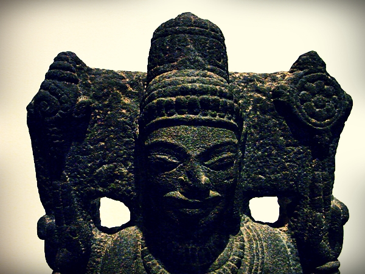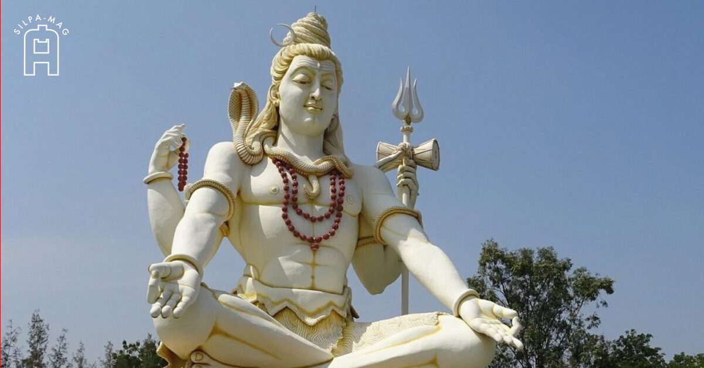
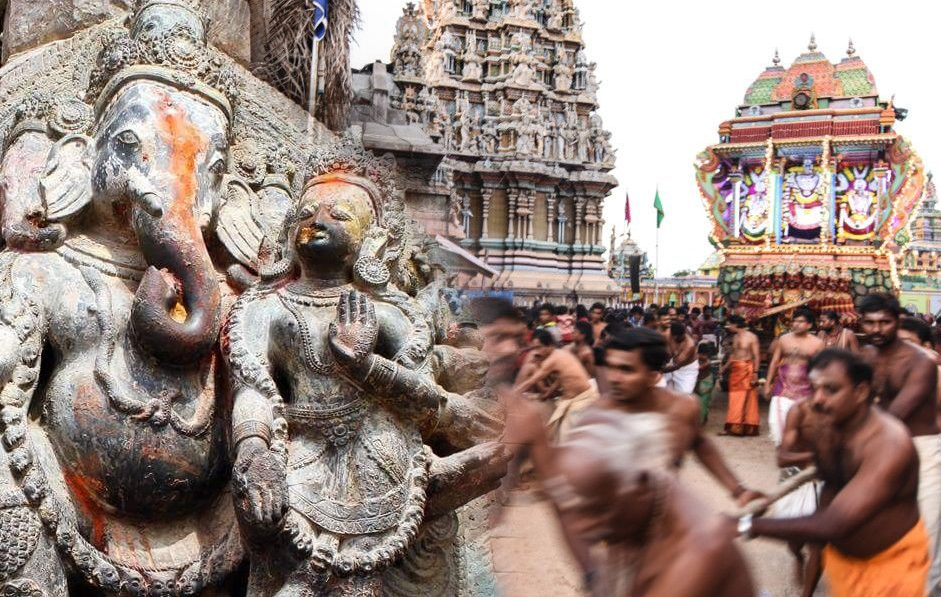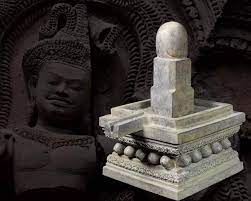
ลักษณะสำคัญ
-พหุเทวนิยม:นับถือเทพเจ้าหลากหลายองค์ มีทั้งเทพเจ้าประจำธรรมชาติและเทพเจ้าประจำวรรณะ
-ตรีมูรติ:เทพเจ้าสูงสุด 3 องค์ คือ พระพรหม(ผู้สร้าง) พระวิษณุ(ผู้รักษา) และพระศิวะ(ผู้ทำลาย)
-ระบบวรรณะ:มีระบบวรรณะแบ่งชนชาติออกเป็น 4 วรรณะ (พราหมณ์ กษัตริย์ แพศย์ ศูทร)
-คัมภีร์พระเวท:คัมภีร์ดั้งเดิมของศาสนาพราหมณ์-ฮินดู